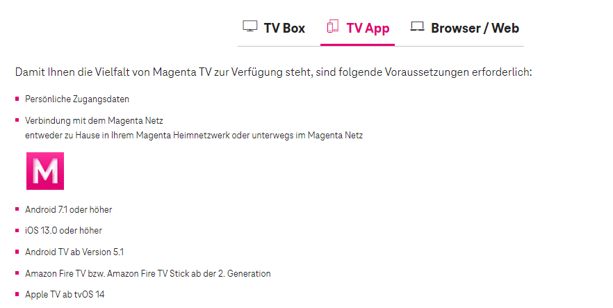
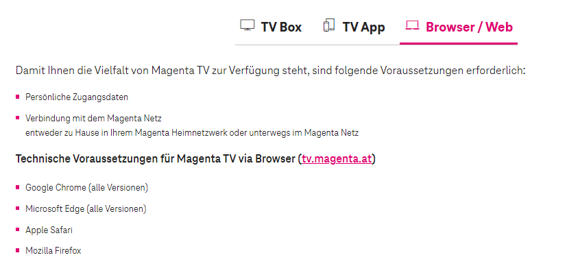

Hallo liebe Magenta.at Community,
ich habe eine speziellere Frage zu dem Magenta-Tv (oder auch IPTV genannt) bzw. zu dem Vertrag bezüglich speziell dem Empfang von den österreichischen Tv-Sendern. Daher würde ich gerne die Magenta Community um Rat fragen, zu folgender Angelegenheit:
Wenn ich in Österreich - AT vorzeitig wohnhaft bin und ich einen Magenta-Tv Vertrag dort abschließe, wie verhält sich das wenn ich beispielsweise mich dann in einem EU-Land bzw. Nachbarland wie Deutschland befinde / aufhalte und dort Magenta-Tv verwenden würde, kann ich dann die österreichischen Tv-Sendern weiterhin empfangen?
Laut meiner Recherche, konnte ich dazu nichts spezifisches finden, lediglich nur den Vermerk / Hinweis von einer anderen Webseite:
Magenta-TV funktioniert in allen Ländern der EU. Leider nichts detailreiches wie das mit den Tv-Sendern geregelt wird, was den Empfang betrifft.
Also ob ein individueller Vertrag möglich ist ( bspw. für Privat als auch für gewerbliche Kunden) um die AT-Sender auch in Deutschland zu empfangen?
Wäre sehr nett, wenn wir dies jemand genauer erläutern könnte.
Am 13.1.2024 um 11:31 schrieb UserAndi:Magenta-TV funktioniert in allen Ländern der EU.
Hallo,
also grundsätzlich haben alle Möglichkeiten, um von Magenta Fernsehen zu empfangen, bestimmte Voraussetzungen:
1.
2.

3.

Wie bei allen drei Möglichkeiten steht, ist ein Magenta Internet Zugang erforderlich, sprich eine Verbindung zum Magenta Heim-Netz. Diesen wirst du im Ausland nicht haben. Aus diesem Grund, kannst du Magenta TV auch nicht außerhalb von Österreich empfangen.
Hier noch die Info dazu: https://www.magenta.at/faq/entry/~technische-anfrage~fernsehen~allgemein/~TV_Fremdnetz~master
LG JD.
Am 15.1.2024 um 13:30 schrieb Jonathan Dorian:
Wie bei allen drei Möglichkeiten steht, ist ein Magenta Internet Zugang erforderlich, sprich eine Verbindung zum Magenta Heim-Netz. Diesen wirst du im Ausland nicht haben. Aus diesem Grund, kannst du Magenta TV auch nicht außerhalb von Österreich empfangen.
m.M. gibt es (eher theoretisch) schon die Möglichkeit im Ausland Magenta TV zu nutzen - über eine mobile Magenta-Verbindung/Roaming, das sollte für die Prüfung aufs Heimnetz/Magenta passen. Aufgrund der limitierten Datennutzung für Roaming bei den meisten Vertragsmodellen aber wirklich nur eher theoretisch, bzw. begrenzt.
Am 17.1.2024 um 13:31 schrieb chuzpe:m.M. gibt es (eher theoretisch) schon die Möglichkeit im Ausland Magenta TV zu nutzen
Wenn du eine übliche Roaming-Verbindung im Ausland herstellst, dann wirst du Magenta TV nicht nutzen können. Der Grund ist der, dass du dich im Ausland mit einem ortsansässigen Netz verbindest, welches dann Daten ins Magenta- Heimnetz überträgt bzw. wieder zurücksendet (grob gesagt). Eine direkte Verbindung mit dem Magenta-Heimnetz ist so nicht gegeben.
Das es noch andere theoretische Möglichkeiten gibt, wage ich nicht zu bezweifeln - wäre aber dann so nicht erlaubt.
Liebe Grüße, JD.
wie steht denn das dann mit der
EU Portabilitätsverordnung
aus dem Jahre 2018 im Einklang? Dort wird doch m.W. nach geregelt, dass man innerhalb der EU kostenpflichtige Streamingdienste (Medien und Live) bei kurzfirstigen Aufenthalt in einem anderen EU Land abrufen können muss. Voraussetzung ist hier nur der Nachweis des ständigen Wohnsitzes im Vertragsland, was ja durch den Magenta Vertrag erfüllt wäre, oder? Bitte prüft und ändert das, damit Wohnmobilisten wie ich, auch im Urlaub unsere Lieblingssender streamen können!
Vielen Dank im Voraus
{kind=link}
{kind=link}
{kind=link}